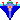
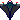
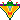

|
Catapult |
|
☆ランキングについて ランキングはcgiを入れていないので現状では利用出来ません。 applet上で「登録する」を選択した場合の動作は不定です。（^w^;） ゲームオーバー or クリアすると自分のスコアをランキングに登録できます。 その際、名前は必ず入力してください。 ランキング表示用なので、適当なもので構いません。 コメントも登録できます。必須ではありません、書きたいことがあれば書いてください。 名前もコメントも日本語が使えると思います。 ただし、続けてゲームをする際、 日本語入力オンになっていると、操作できない可能性があります。 |
|
◆「つづきから」について タイトル画面で「つづきから」を選択するとパスワード入力画面になります。 ただしいパスワードを入力すると、それに対応したステージから始まります。 間違ったパスワードを入力すると、タイトル画面に戻ります。 ※パスワードはステージをクリアすると、表示されます |
|
☆アイテムについて 以下はアイテムです。弾を当てるごと下のように変化します。 → → →  →
→
→最初（青）に戻る。 →
→
→最初（青）に戻る。下部の紫のエリアに進入することでアイテムを取ることが出来ます。 初めの5つはそれぞれの色でわかるように、取ると同じ色の弾が増えます。 最後のハートが付いているものを取るを、HPが増えます。 |
| ◇ゲーム中 SPACEキーでポーズできます。 |
|
◇弾の発射操作について 弾を発射するために弾をドラッグしますが、操作性をよくするために、 弾の真上だけでなく、弾から弾の大きさ5つ分くらい下側までの範囲なら、 ドラッグを開始できるようにしてあります。 |
|
◇発射の方向と強さについて 弾を発射するとき、ドラッグする位置により弾の飛ぶ方向が決まります。 さらに発射位置から離れるほど、（ゴムを伸ばすほど） 弾のスピードが上がります。 そのときスピードの応じて3段階に発射音が変わり、速いほど高い音が出ます。 注意 弾の速度が速すぎると敵をすり抜けてしまうこともあります。 注意 画面（アプレット）の外までドラッグしてしまうと、 弾は発射されず、弾の残数は減ります。 |
|
◇ゴムの伸びる（ドラッグできる）範囲は下部の紫の部分です。 ドラッグ中なら、その範囲を出てもその範囲へ戻ればゴムの伸縮は継続されます。 ただし、ドラッグして、その範囲外でマウスボタンを離すとやり直し、 つまり弾をセットする前の状態に戻ります。 |
| 種類 | 威力 | 連発（分裂）数 | 飛空時間 | キー |
| 青弾 （通常弾） |
１ | ５ | 普通 | Z |
| 一定時間で弾が増えます。 | ||||
| 緑弾 （貫通弾） |
３ | ２ | 普通 | X |
| 一定時間で弾が増えます。 | ||||
| 赤弾 （誘導弾） |
１ | １ | やや長い | C |
|
弾を放った後アプレット上ならどこでも良いので ドラッグすることで弾の速度を変えることが出来ます。 スコア500毎で弾が増えます。 | ||||
| 銀弾 （壁分裂） |
１ | ２０ | やや長い | V |
|
左右の壁に当たると分裂し、横方向のみへ動きます。 要は壁に当てれば、そこでシールドのようになります。 飛空時間が過ぎるといっせいに消えます。 消えるまで次の弾を撃つのは難しいです。 |
||||
| 金弾 （敵分裂） |
１ | ２０ | 長い | B |
|
敵に当てるとビックリして4方向に分裂します。 銀弾と同じ様に飛空時間が過ぎるといっせいに消えます。 |
||||
|
威力 ： 1発で敵を何体倒せるか（貫通力） 連発 ： 発射できる弾の数、画面上に飛空している弾の合計数 飛空時間 ： 飛空出来る時間、この時間が過ぎると弾は消える キー ： キーボードのそれぞれのボタンで弾をセットできる |
||||
| 種類 | 耐久力 | 速度（縦｜横） | 速度変化 |
|  敵１ | １ | １｜０〜３ | なし |
|  敵２ | １ | ２｜０ | なし |
|  敵３ | １ | １｜０〜３ | 横方向ランダム |
| 敵４ | １ | １｜０〜４ | 横方向ランダム |